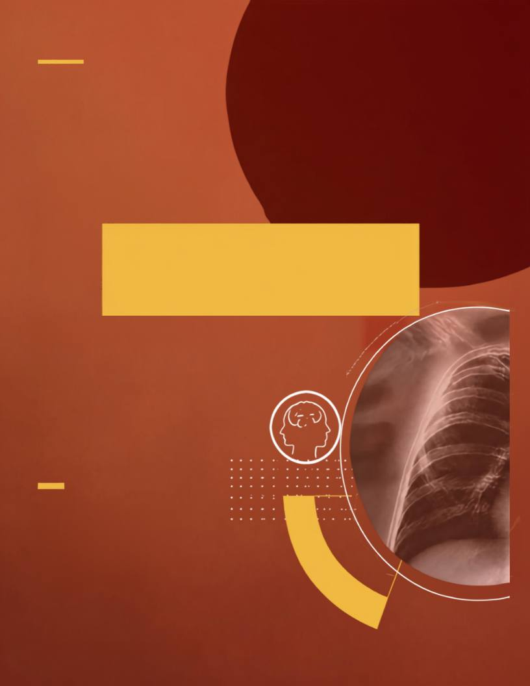

A R T I G O D E O P I N I Ã O
ENTRE O CURRÍCULO E A PRÁTICA
Marcelo Salvador Celestino -
Doutor em Mídia e Tecnologia
(UNESP), Tecnólogo em
Radiologia e Bacharel em
Administração
FORMAÇÃO
EM RADIOLOGIA
ALÉM DA IMAGEM · CORED-SP · CRTR-SP
07
Por
“A formação contemporânea em saúde, entretanto, exige uma
perspectiva integral, que articule conhecimentos, práticas, atitudes e
valores.”